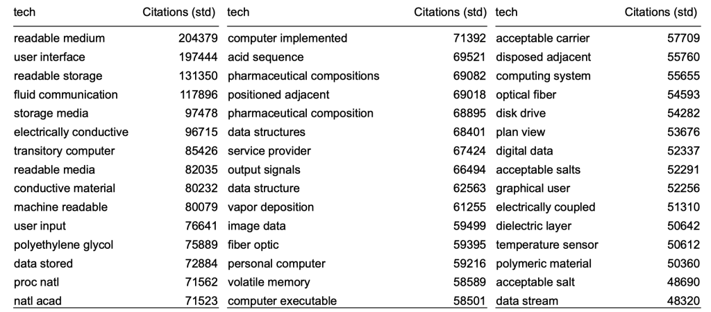
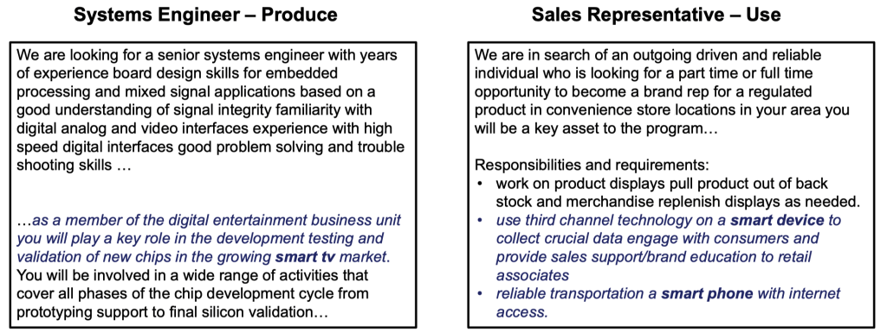
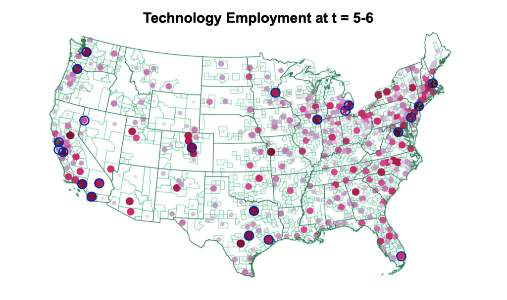
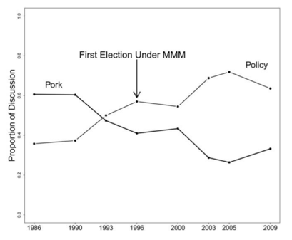

Research Applications#

Textual analysis#
Textual analysis has gained significant popularity in recent years, especially in the field of asset pricing, macroeconomics, and other related fields. This approach involves analyzing large volumes of text to extract meaningful insights and information, which can be used to inform decision-making.
One of the primary reasons for the growing popularity of textual analysis is that it enables researchers to measure economic concepts that are otherwise hard or impossible to measure. For example, sentiments, emotions, and attitudes can be extracted from social media posts, news articles, and other textual data to provide insights into consumer behavior, market trends, and other economic indicators.
Interestingly, the simplest applications of textual analysis have proven to be the most successful so far. Many cutting-edge methods of machine learning, such as deep learning and neural networks, are not always necessary and can even be counter-productive, similar to kitchen-sink regressions that are prone to over-fitting.
Therefore, the advice for researchers interested in textual analysis is to keep it simple and stay close to the text. This means reading a lot of relevant texts and using basic techniques to extract insights. The frontier of this field is more in learning from new data rather than using fancy techniques.
Textual analysis is increasingly popular in asset pricing, macroeconomics, and other fields.
It enables researchers to measure economic concepts that are otherwise hard or impossible to measure.
Simple applications of textual analysis have been the most successful so far.
Many cutting-edge methods of machine learning are not necessary and can even be counter-productive.
The advice is to keep it simple, stay close to the text, and read a lot.
The frontier of the field is in learning from new data rather than using fancy techniques.

Firm-Level Political Risk: Measurement and Effects [Hassan et al., 2019]#
The paper develops a measure of political risk for individual US firms based on the share of their earnings conference calls devoted to political risks.
The measure is validated by correctly identifying calls with extensive conversations on political risks and correlating with the firm’s actions and stock market volatility.
Firms exposed to political risk retrench hiring and investment and actively lobby and donate to politicians.
The variation in the measure is mainly at the firm level, and the dispersion of firm-level political risk increases during high aggregate political risk times.
Firms that spend more time discussing risks associated with a given political topic tend to increase lobbying on that topic in the following quarter.
Conference Call Transcripts
The dataset includes 326,247 earnings conference call transcripts from 11,943 firms headquartered in 84 different countries, spanning from 2002 to 2020.
Conference calls occur typically four times a year after earnings releases.
The calls consist of a management presentation followed by a Q&A session with the firm’s analysts.
On average, the Q&A session involves 0-70 questions and lasts approximately 45 minutes.
Measure of Political Risk
The measure of political risk is computed by counting the number of occurrences of political bigrams in conjunction with a synonym for risk or uncertainty and dividing it by the total number of bigrams in the transcript.
The formula for the measure is given as:
\(PRisk_{it} = \frac{1}{B_{it}}\sum_{b}^{B_{it}}{1[ b \in \mathbb{P}\setminus\mathbb{N}] \times 1[|b-r| \lt 10] \times f_{b,\mathbb{P}}/B_{\mathbb{P}}}\)
where \(r\) is the position of the nearest synonym of risk or uncertainty, \(b = 0,1,\ldots B_{it}\) are the bigrams contained in the call of firm \(i\) at time \(t\), and \(\mathbb{P}\) denotes the set of political bigrams.
The formula applies the “\(tf \times idf\)” method to calculate the weight of the bigrams in measuring political risk.
{kind=link}
Fig. 1 Synonyms for “risk” or “uncertainty”#
Measuring news about the mean: \(PSentiment_{it}\)
The measure of news about the mean is calculated using the same approach to measure the mean of political news.
The sentiment of political news is measured by counting positive and negative words used in conjunction with a political bigram.
The formula for measuring news about the mean is given as:
\(PSentiment_{i,t} = \frac{1}{B_{it}} \sum_{b}^{B_{it}} \Big( 1[ b \in \mathbb{P}\setminus\mathbb{N}] \times \frac{f_{b,\mathbb{P}}}{B_{\mathbb{P}}} \times \sum_{c=b-10}^{b+10} S(c) \Big)\),
where \(\mathbb{P}\) denotes the set of political bigrams, \(S\) assigns sentiment to each word in the vicinity of the bigram, and \(B_{it}\) represents the total number of bigrams in the transcript.
The correlation between the measure of political risk and the measure of news about the mean is negative, with \(Corr(PRisk_{it}, PSentiment_{it}) = −0.095^{***}\).
\(PRisk_{it}\)
\(PRisk_{it}\) is a measure that identifies conversations related to risks associated with political topics.
The bigrams with the highest scores are intuitively linked to politics, such as “the constitution,” “public opinion,” “interest groups,” and “the FAA.”
The transcripts with the highest \(PRisk_{it}\) values are typically centered around discussions about ballot initiatives, legislation, regulation, government expenditure, and other politically relevant topics.
{kind=link}
Fig. 2 Transcripts with the highest \(PRisk_{it}\)#
Example: Duke Energy Corporation

Fig. 3 A coal company’s \(PRisk_{it}\)#
Sources and Transmission of Country Risk [Hassan et al., 2021]#
The paper uses textual analysis of earnings conference calls held by listed firms globally to measure country risk.
The firm-country-quarter-level data is used to identify spikes in perceived country risk, known as “crises,” and their pattern of transmission to foreign firms.
The pattern of transmission during crises usually follows a gravity structure, but it changes significantly during crises.
Elevated perceptions of a country’s riskiness by foreign and financial firms lead to significant falls in local asset prices, capital outflows, and reductions in firm-level investment and employment.
Risk transmitted from foreign countries also affects the investment decisions of domestic firms.
The cross-country pattern of interest rates and currency risk premia can be explained by the heterogeneous currency loadings on perceived global risk.
Data and Methodology#
For each of 56 countries assemble a training library, \(\mathbb{T}^{C}\)
The training library consists of all “Country Commerce” reports published by the Economist Intelligence Unit from 2002 to 2016 and all names of the country, names of towns with more than 15,000 inhabitants in 2018, and administrative subdivisions from geonames.org and CIA World Factbook.
\(tf \times idf\) is used to identify bigrams that are indicative of discussions of each country.
A bigram is considered indicative of discussions of country \(C\) if it is frequent in \(C\)’s training library and rarely used in other countries’ libraries.
Four Dimensions of \(CountryRisk_{i,c,t}\)
Risk a given set of firms K associates with country c:
\(CountryRisk_{c,t}^{K} = \frac{1}{N_K}\sum CountryRisk_{i,c,t}\)
Foreign risks perceived by firm i at time t:
\(ForeignRisk_{i,t} = \sum_{c \ne d(i)} CountryRisk_{i,c,t}\)
Transmission of risk from o to d at time t:
\(TransmissionRisk_{o \to d,t} = \frac{1}{N_d}\sum CountryRisk_{i,o,t}\)
Global Risk at time t:
\(GlobalRisk_{t} = \frac{1}{N_I}\frac{1}{N_C}\sum_{i \in I}\sum_{c \in C} CountryRisk_{i,c,t}\)
Measuring Exposure, Sentiment, and Firm Risk
\(CountryExposure_{i,c,t}\) : tf × idf weighted share of words related to country c
\(CountrySentiment_{i,c,t}\) : tf × idf weighted sum of tone words toward country c (Loughran & McDonald 2011) (Proxy for positive/negative news about country c)
\(FirmRisk_{i,t}\) : Unweighted count of risk words. (Proxy for overall risk faced by the firm)

Fig. 4 Financial and non-financial risk: Greece#

Fig. 5 Financial and non-financial risk: Thailand#

Fig. 6 Financial and non-financial risk: Global#
Text-Based Network Industries and Endogenous Product Differentiation [Hoberg and Phillips, 2016]#
The paper studies how firms differ from their competitors using time-varying measures of product similarity based on text-based analysis of firm 10-K product descriptions.
The time-varying set of product similarity measures enables the generation of new industries in which firms can have their own distinct set of competitors.
The new sets of competitors explain specific discussion of high competition, rivals identified by managers as peer firms, and changes to industry competitors following exogenous industry shocks.
The study finds evidence that firm R&D and advertising are associated with subsequent differentiation from competitors, consistent with theories of endogenous product differentiation.
Cosine similarity is the most popular way of calculating similarity.
The formula for cosine similarity is \( S_{i,j} = c_i \cdot c_j \), where \(c_i\) is the normalized representative vector of words for document \(i\).
This approach provides a creative way of figuring out who is competing with whom, using text-based analysis of firm 10-K product descriptions to measure product similarity and identify distinct sets of competitors.
Product Descriptions to Vector
Product descriptions are converted to vectors by only keeping nouns (according to webster.com) and proper nouns, while dropping the most commonly used nouns.
The resulting vector (\(c_i\)) consists of binary values for included words.
The cosine similarity between all firm-year pairs results in a large matrix with firm-year as rows and columns.
The firm-year pairs are clustered year by year to form yearly industry clusters.
Results
The study uses text-based analysis of firm 10-K product descriptions to track changes in industries and identify competitors.
This approach can be used to form industry definitions and track who is competing with whom.
One drawback of using 10-K’s is that they are only available for US firms, limiting the generalizability of the findings.

Fig. 7 Industry clusters based on product similarity#
Measuring Economic Policy Uncertainty (EPU)#

This proxy for Economic Policy Uncertainty (EPU) comes from computer searches of newspapers
US index: 10 major papers get monthly counts of articles with:
E{economic or economy}, andP{regulation or deficit or federal reserve or congress or legislation or white house}, andU{uncertain or uncertainty}
Divide the count for each month by the count of all articles
Normalize and sum 10 papers to get the U.S monthly index
Constructing the US News-Based EPU Index
Newspapers:
Boston Globe
Chicago Tribune
Dallas Morning News
Los Angeles Times
Miami Herald
New York Times
SF Chronicle
USA Today
Wall Street Journal
Washington Post
Validation: Running Detailed Human Audits
10 undergraduates read ≈ 10,000 newspaper articles to date using a 63-page audit guide to code articles if they discuss “economic uncertainty” and “economic policy uncertainty”
US News-based economic policy uncertainty index

Twitter text uncertainty measures
“world uncertainty index” covering 143 countries from Economist Intelligence Unit text

Global average of all 143 countries
The Diffusion of Disruptive Technologies#
Bloom, Kalyani, Lerner, and Tahoun (2021), The Diffusion of Disruptive Technologies
Construct text-based measures of exposure to 20 different technologies at the firm, patent, and job-level, 2002-19.
Use these novel data to study the spread of new technologies across firms, regions, occupations, and skill-levels.
Five Stylized Facts on Disruptive Technologies
Development & initial employment in disruptive technologies is geographically highly concentrated.
Over time, hiring associated with new technologies gradually spreads: “region broadening.”
Over time, skill level in tech jobs declines sharply: “skill broadening.”
Low-skill jobs associated with a given technology spread out significantly faster than high-skill jobs.
Pioneer locations retain long-lasting advantage in high-skilled jobs.
Data Sources
Full text of USPTO patents (1976-2016)
Typically follow a research paper format – invention title, abstract, claim, description.
Transcripts of Earnings Conference Calls (2002-19)
Discussions of 300k+ quarterly earnings by 12k publicly listed firms.
Typically contains management presentation followed by analyst Q & A.
Full text of 200 M+ online job postings from BG (2007, 2010-19).
Scraped from job forums (e.g., Glassdoor.com) and employer websites.
Geo-coded and assigned to SOC Codes
Step 1: Identify Technical Bigrams from Patents
Identify two-word combinations (bigrams) that are indicative of discussion of novel technologies.
Extract all (17 mil+) bigrams US patents (1976-2016)
Remove any bigrams that were commonly in use prior to 1970 (Corpus of Historical American English)
Keep bigrams which account for at least 1000 citations.
List of 35,063 ‘technical bigrams’ associated with influential inventions.
Top Bigrams in Patents

Step 2: Identify Disruptive Technologies from Earnings Calls
Identify technical bigrams that are discussed in EC with increasing frequency (keep those at <10% of max in first year) – Total 305.

Technical vs non-technical bigrams
Non technical bigrams = bigrams in earnings calls and NOT in patents

Step 3: Bigrams to Technologies
Two alternative approaches
“Supervised”: Group bigrams with similar meaning to measure the spread of 29 specific technologies, add `synonyms’ and manually audit each bigram. (Main specification)Smart Devices - mobile devices; smartphone tablet; android phones; smart phones …
3d printing - 3d printer; 3d printing; additive manufacturing; d printed
“Unsupervised”: Treat each tech bigram as a separate technology without any further intervention. (Robustness check)
Technology Exposure
Measure technology exposure at the patent, earnings call, and job level as
\( \text{exposure}_{i,\tau,t} = 1\{b_{t} \in D_{i,t}\} \)
where \(D_{i,t}\) is the set of bigrams contained in a job posting/earnings call posted at time \(t\) and \(b_{\tau}\) is a bigram associated with technology \(\tau\).
Example Jobs Exposed to Smart Devices

On average, each technical bigram appears in 59,013 job postings. Compare to 157 average mentions of top non-technical bigrams from earnings calls.
Define an Emergence Year for each Technology
Measure the share of earnings calls mentioning a technology
Define a “technology year of emergence” as year in earnings calls when
the time series first attains at least 10% of its maximum.

Share Exposed Firms and Job Postings – Corr. 80%

Pioneer Locations
Define pioneer locations as ones which account for 50% of technology patents 10 years before emergence year.

Broadening over Time and Pioneer Locations

Parts of Speech Predict Loan Repayment#
Netzer, Lemaire, and Herzenstein (2019), “When Words Sweat”
Imagine you consider lending $2,000 to one of two borrowers on a crowdfunding website. The borrowers are identical in terms of demographic and financial characteristics. However, the text they provided when applying for a loan differs:
Borrower #1:
“I am a hard working person, married for 25 years, and have two wonderful boys.
Please let me explain why I need help.
I would use the $2,000 loan to fix our roof.
Thank you, god bless you, and I promise to pay you back.”
Borrower #2:
“While the past year in our new place has been more than great,
the roof is now leaking and I need to borrow $2,000 to cover the cost of the repair.
I pay all bills (e.g., car loans, cable, utilities) on time.”
Which borrower is more likely to default?
“Loan requests written by defaulting borrowers are more likely to include words (or themes) related to the borrower’s family, financial and general hardship, mentions of god, and the near future, as well as pleading lenders for help, and using verbs in present and future tenses.”
Loan Application Words Predicting Repayment


“Legislative Influence Detectors”#
by Burgess et al
The two largest interest group associations: ALEC (on the conservative side) and ALICE (on the liberal side)


Compare bill texts across states in two-step process:
find candidates using elasticsearch (tf-idf similarlity);
compare candidates using text reuse score.
From Pork to Policy#


Topic modeling Federal Reserve Bank transcripts#
Analyze speech transcripts from FOMC (Federal Open Market Committee).
private discussions among committee members at Federal Reserve (U.S. Central Bank)
150 meetings, 20 years, 26,000 speeches, 24,000 unique words.
Pre-processing:
drop stopwords, stems; vocab = 10,000 words
LDA:
K = 40 topics selected for interpretability / topic coherence.

Pro-Cyclical Topics

Counter-Cyclical Topics

Effect of Transparency

In 1993, there was an unexpected transparency shock where transcripts became public.
Increasing transparency results in:
higher discipline / technocratic language (probably beneficial)
higher conformity (probably costly)
Highlights tradeoffs from transparency in bureaucratic organizations.
Text matching for causal inference#
Application to online censorship in China by Roberts, Stewart, and Nielsen (2018)
Construct a corpus of chinese social media posts, some of which are censored.
593 bloggers, 150,000 posts, 6 months
They use a variation of propensity score matching to identify almost identical posts, some of which were censored, and some of which were not.
Outcome:
Using text of subsequent posts, measure how likely they are to be censored (how censorable)
Can see whether censorship has a deterrence or backlash effect.
Censorship has a backlash effect

Bloggers who are censored respond with more censorable content.